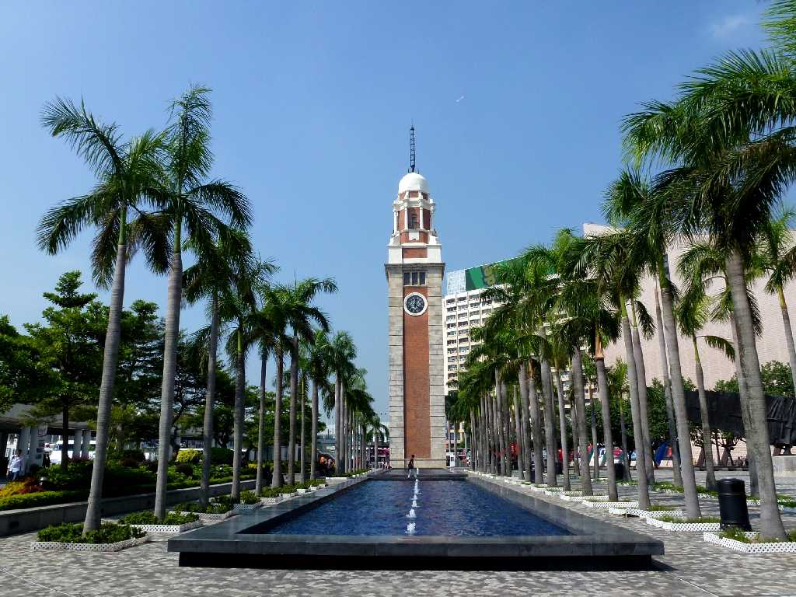
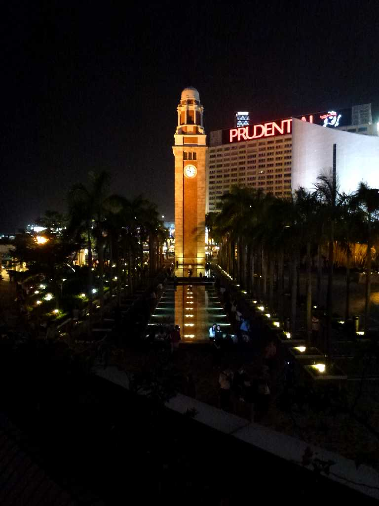
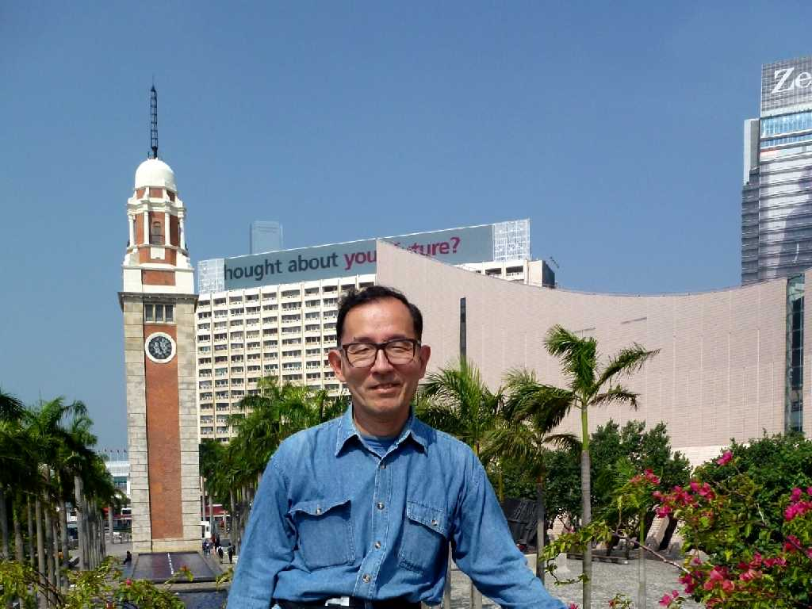
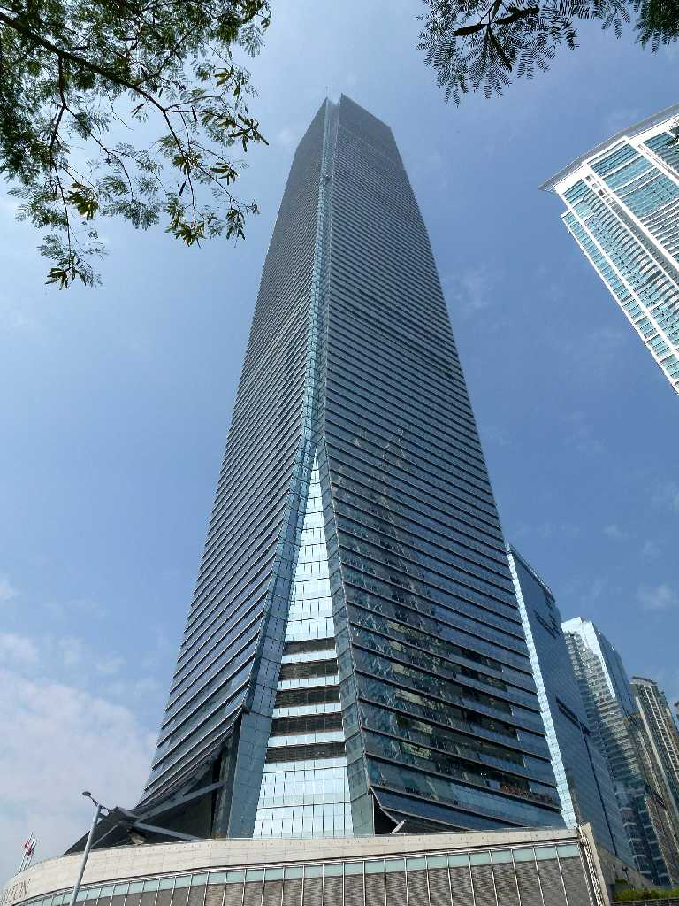
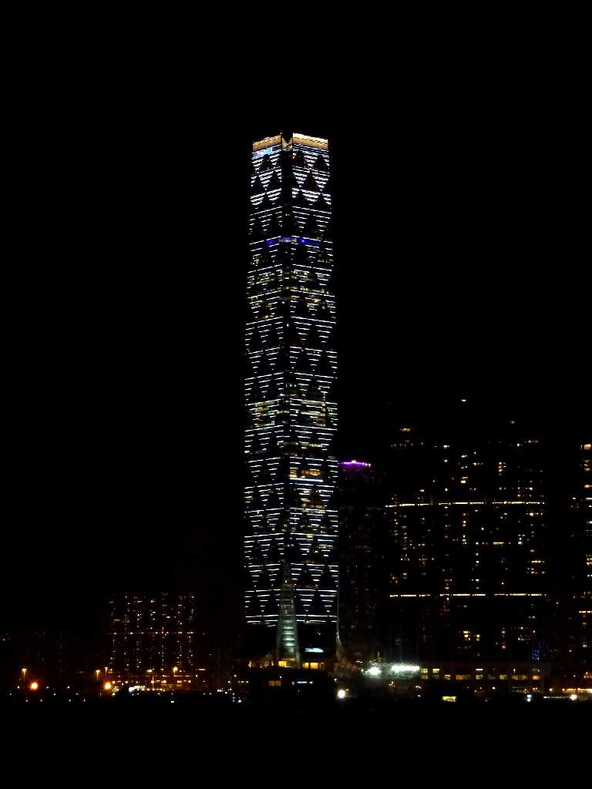
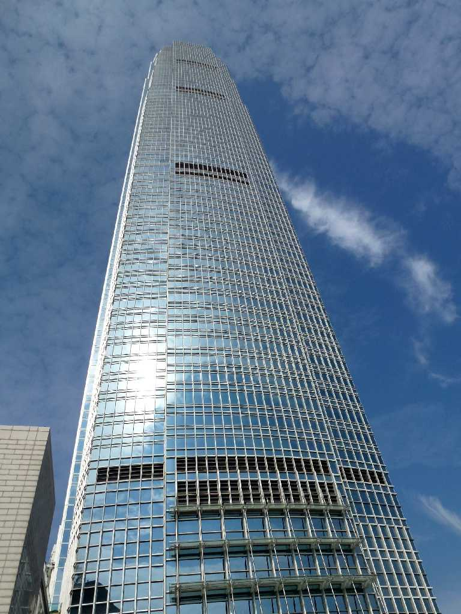
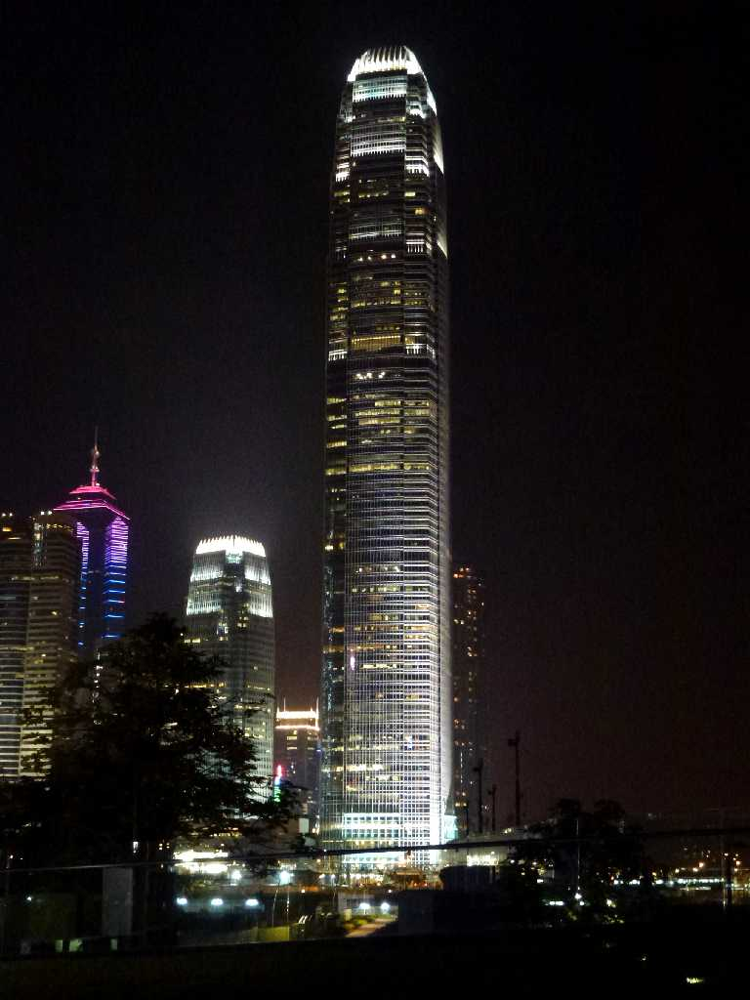

Tsim Sha Tsui Clock Tower Kowloon Hong Kong 香港
広州へ行くための鉄道の始発駅であった尖沙咀駅に隣接する形で１９１５年に創られた高さ４４ｍの時計台 香港からロシアを抜けヨーロッパへ向かうアジアとヨーロッパを結ぶ列車の出発点でもあった

Night View Clock Tower Kowloon

November 2 2012 Clock Tower Kowloon

International Commerce Centre Kowloon 環球貿易広場
地上高４８４ｍ １１８階 床面積２６万㎡ 香港で最も高い超高層ビル

International Finance Centre Central Hong Kong 国際金融中心
地上高４１６ｍ ８８階 床面積１９万㎡ 香港島の超高層ビル